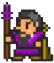

Walk right 300px - transform:translateX(300px);

Walk right 300px and fade out with opacity - transform:translateX(300px);
transform: scale(3);
Walk Back; Seems you have to put all your transforms on one line, so transform:translateX(300px) scaleX(1); not transform:translateX(300px); transform:scaleX(1);
Background Change